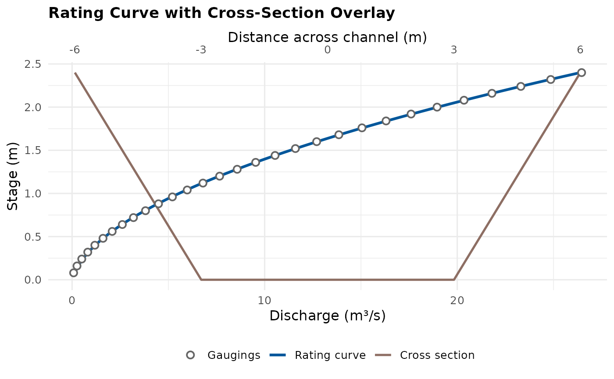

Derive a theoretical rating from a surveyed cross-section (Manning's equation)
Source:R/rate_from_cross_section.R
rate_from_cross_section.RdBuilds a stage-discharge rating from channel geometry alone, with no
gaugings: at each of a dense sequence of stages, cross_section's
wetted area and wetted perimeter are found by trapezoidal integration
of the surveyed points, giving a hydraulic radius, and Manning's
equation (Q = (1/n) * A * R^(2/3) * sqrt(S)) converts that to a
discharge. That synthetic (stage, discharge) series is then handed
straight to rate_optimise(), so the returned FlodeRating carries
the same C/a/n limbs, break detection, and diagnostics as any
gauged fit – the only difference is fit@provenance$source, which
reads "cross_section_theoretical" rather than "gauged", and
fit@gaugings, which holds the synthetic points the Manning
calculation produced rather than real field measurements.
This is a standalone diagnostic: a first-cut rating at an ungauged or
newly-installed site, or a physically-grounded check on what a
surveyed section implies about the shape of the curve – not (yet) a
way to extend an existing gauged rating past its top gauging. Since
cross_section is exactly the object plot_rating_cross_section()
also takes, the two compose directly: overlay the returned fit against
the very geometry that generated it as a sanity check (see Examples).
A single Manning's n is applied across the whole wetted section.
Real compound channels (a defined low-flow channel plus overbank
berms with different roughness) are more accurately handled by the
divided-channel method, with a separate n per subsection – not
supported here; treat a single-n result for a compound section as
approximate.
cross_section must reach at least as high as the highest stage
rated: this function does not assume the end points extend as
vertical banks above the survey's own top, so a stage_seq above
max(elevation_col) errors rather than silently understating the
true wetted perimeter. Supply a wider survey (including bank points)
to rate higher stages.
Usage
rate_from_cross_section(
cross_section,
slope,
roughness,
distance_col = "distance_m",
elevation_col = "elevation_m",
stage_seq = NULL,
n_points = 100L,
control = NULL,
n_bounds = NULL,
...
)Arguments
- cross_section
A data.frame/data.table of surveyed distance/elevation points, at least 2 rows, already on
stage's own vertical datum (see Description).- slope
Single positive finite number. Bed/energy slope, m/m.
- roughness
Single positive finite number. Manning's
n.- distance_col, elevation_col
Character. Column names in
cross_section, matchingplot_rating_cross_section()'s own defaults so the same object works with both functions. Default"distance_m"/"elevation_m".- stage_seq
Numeric vector of stages to evaluate, or
NULL(default) for an evenly-spaced sequence ofn_pointsstages from just above the cross-section's lowest surveyed elevation to its highest.- n_points
Integer. Number of stages in the default
stage_seq. Ignored ifstage_seqis supplied. Default100L.- control, n_bounds
As in
rate_optimise(), passed straight through to fit the synthetic series.- ...
Further arguments passed to
rate_optimise()(e.g.multi_start,objective).
Value
A FlodeRating instance, identical in structure to
rate_optimise()'s own return value.
See also
rate_optimise(), which this function calls internally;
plot_rating_cross_section() for overlaying the result on
cross_section; graft_rating() for joining a rating onto another
above its trusted range (a natural next step for a cross-section
rating used to extend a gauged one, not yet wired up here).
Examples
# A simple trapezoidal survey (same shape plot_rating_cross_section()'s
# own example uses): a 6 m flat bed, 1.25:1 side slopes, 2.4 m banks.
xs <- data.frame(
distance_m = c(-6, -3, 3, 6),
elevation_m = c(2.4, 0, 0, 2.4)
)
fit <- rate_from_cross_section(xs, slope = 0.001, roughness = 0.035, n_points = 30)
fit@provenance$source
#> [1] "cross_section_theoretical"
# Overlay the fit on the very geometry that generated it.
plot_rating_cross_section(fit, xs)
